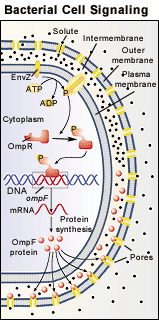

The Biology Project > Cell Biology > Cell Signaling > Problem Set
Cell Signaling Problem Set
Problem 5: Bacterial Cell Signaling
Tutorial to help answer the question
E.coli respond to increased solute concentrations by phosphorylation of the membrane receptor _______________, which transfers a phosphate to the subcellular second messenger ______________ that initiates transcription of the ___________ gene producing a protein that can prevent solute entry and preserve the osmotic integrity of the cell.
A. EnvZ, OmpR, OmpF B. OmpR, EnvZ, OmpF C. OmpF, OmpR, EnvZ D. OmpR, OmpF, EnvZ E. OmpF, EnvZ, OmpR Tutorial
A model system for signal transduction
|  |
>
The membrane receptor (EnvZ) changes shape in response to high solute concentrations and activates endogenous kinase activity that phosphorylates itself. A phosphate is then transferred to a cytoplasmic receptor (OmpR). In this case, OmpR activated by the phosphate addition is acting like a second messenger. Many phosphorylated or activated OmpR can be produced by one activated EnvZ receptor, amplifying the signal. The phosphorylated OmpR binds to the promoter of the OmpF gene and stimulates mRNA production. Translation of the mRNA produces the OmpF protein. The OmpF proteins inserted in the outer membrane reduce the entry of solute into the intermembrane space. The key features of receptor binding, kinase activation, second signal production, amplification, and stimulation of gene expression are common to many eukaryotic signaling systems. |
Problem 5 | Answer | Problem 6
The Biology Project > Cell Biology > Cell Signaling > Problem Set
Department of Biochemistry and Molecular Biophysics
University of Arizona
May 2002
Revised: August 2004
Contact the Development Team
http://biology.arizona.edu
All contents copyright © 2002-04. All rights reserved.